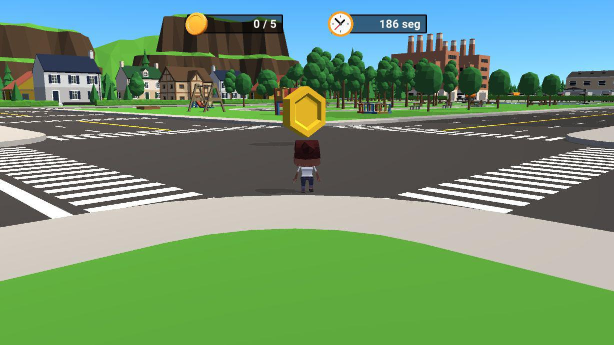

¿Cuantas entregas puedes completar?

1Objetivos del juego:
- Generar recursos
- Desbloquear y generar construcciones
- Subir de nivel
- Completar exitosamente los cuestionarios (Ternium)
- Completar las misiones con tres estrellas
2Historia
El personaje del jugador es un nuevo empleado en Ternium y depende de él de que la empresa crezca y se expanda. Al principio, la empresa solo tiene una construcción en el mapa y pocos recursos, pero conforme progrese el jugador, la empresa irá creciendo y tendrá más construcciones y recursos.
3Detalles tecnicos
- Hardware objetivo. Computadora
- Game Engine. Unity
- Requerimientos de red. Se requiere una conexión estable y se sugiere que sea con banda ancha mayor de 10 mbps
Elige entre distintos personajes